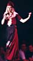
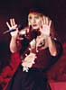
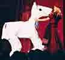
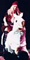

| På Scenen | |
| De 9 Frøken Verden kandidater skulle vises frem en af gangen i kategorierne: Hverdags / Strand og Festtøj. | |
| FRØKEN VERDEN - Festtøj | 10-Aug-2002 |
   |
|
   |
|
|
Dennis Agerblad blev nr. 2 til konkurrencen. Iført den færøske national dragt: Kjole med forklæde, Bælte med sølvspænde, bluse med sølvsmykker, sjal, broshe. Huen er fra den mandlige dragt. Hør sangene her på siden under punktet diskotek i menuen musik. |
|
| Tak til |
| Tusind tak til Anders og Gabriel for at
lade mig ride på dem som hest i min "Festtøj" sang. Tusind tak til Kina for stor hjælp med kostumer backstage til FRØKEN VERDEN. Tusind tak til Messell fordi jeg måtte bruge de lydklip fra din musik i min "Festtøj" sang. Tak til Guxi for smukt kor på sangen "Festtøj". Tusind tak for fotografier: www.malle-fotografi.dk www.desportes.com |